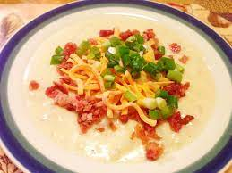

Potato Soup

A bowl of potato soup.
This potato soup recipe is highly customizable and able to be adapted to your liking. Feel free to add anything you think might go well. Some ideas include bacon or different types of veggies.
This potato soup is a great choice for a chilly fall or winter night.
Ingredients
- 2 pounds of gold potatoes, diced
- 4 cups of broth (any)
- 4 cloves of garlic, minced
- 1 cup whole milk
- 1 cup yellow or white onion, diced
- 1/4 teaspoon salt
- 1/2 teaspoon ancho chili powder
- ground black pepper, to taste
- Bring dicecd potatoes to a boil in the broth and cook until soft and easily pierced with a fork.
- In a separate pot, cook diced onion in a drizzle of oil until translucent.
- Add minced garlic, and cook until fragrant.
- Add salt, chili powder, and black pepper to mixture and cook, stirring, for one minute.
- Meanwhile, mash potatoes according to desire. You can leave chunks if you prefer, or mash until smooth.
- Add onion mixture as well as milk to pot with potatoes, and simmer for ten minutes, or until liquid is reduced to your preference.